ЛЮДИ
Студенты и преподавательский состав 1958-1968 гг.Тодорцев Ю.К. - выпускник ТЭФ (ИЭКСУ), диплом ОПИ с отличием 1959 г., затем в 1994-1996 директор энергетического института (ИЭКСУ) ОНПУ.
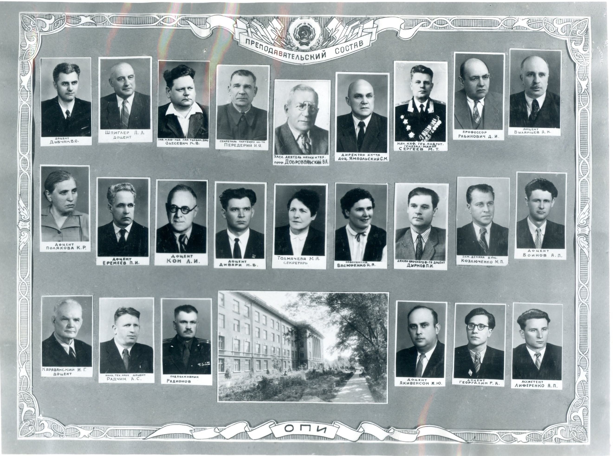Научно-преподавательский состав ТЭФ, 1959 г.
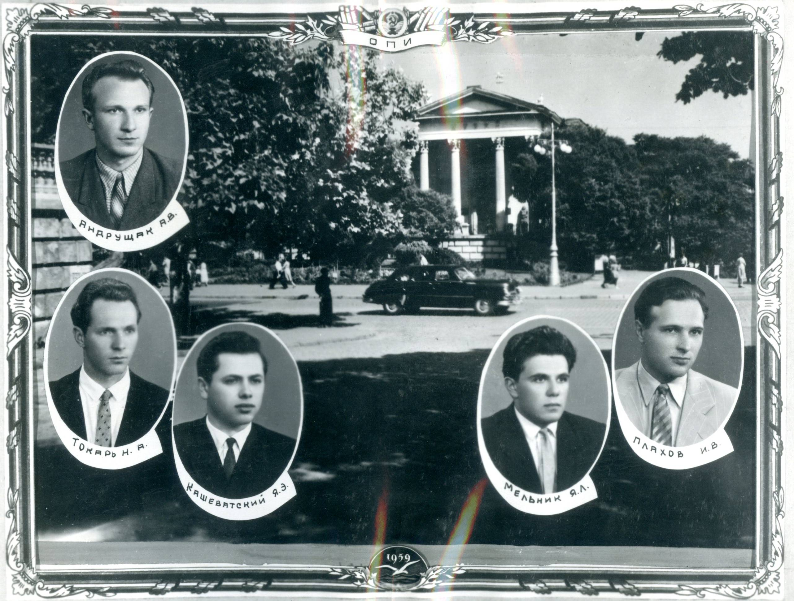Из альбома выпускника ТЭФ 1959 г. Токаря Н.А. Музей ОНПУ.
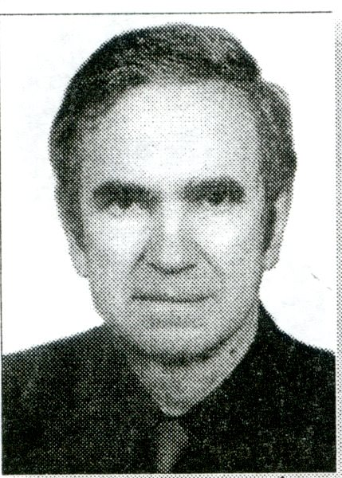1) Раевский Р.Т. подготовил и способствовал подготовке более 200 спортсменов высокой квалификации, среди которых призеры и чемпионы Украины, СССР, Европы, мира, Олимпийских игр. 2) Награжден 3 правительственными наградами и 6 дипломами, медалями и свидетельствами ВДНХ Украины и СССР, почетными знаками. 9 лет редактировал на общественных началах лучшую вузовскую многотиражную газету Украины - "Одесский политехник".
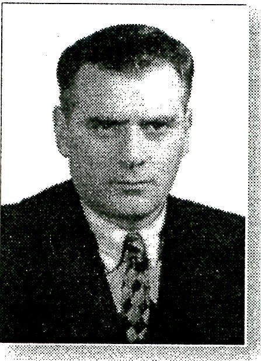Рвачев А.Л. - первый декан факультета радиоэлектроники ОПИ, 1961 г.
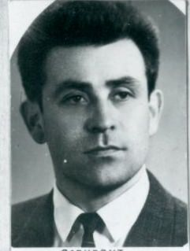 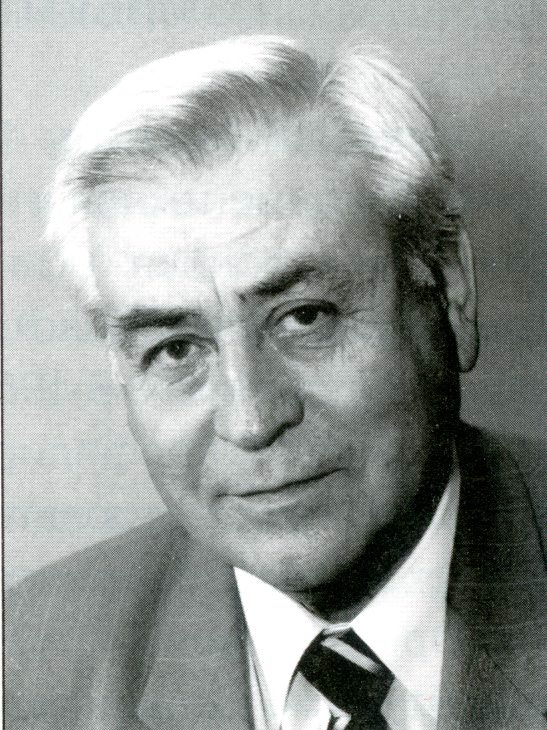Еримичой И.М. - один из первых выпускников ФРЭ (ИИБРТ), который получил диплом ОПИ с отличием в 1964 году, затем в 1988-2004 гг. декан этого же факультета
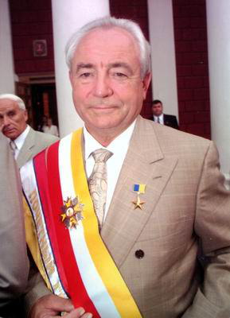Филипчук В.С. - генеральный директор, председатель правления, Одесское предприятие по экспорту и импорту нефтепродуктов
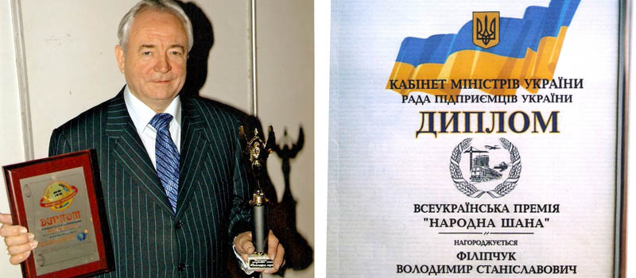Флипчук В.С.
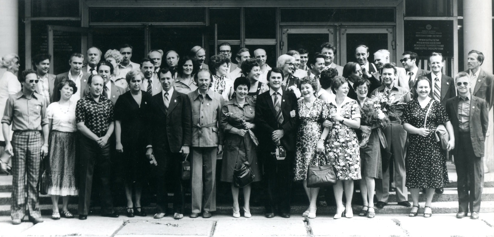Выпускники МТФ ОПИ, 1960 г.
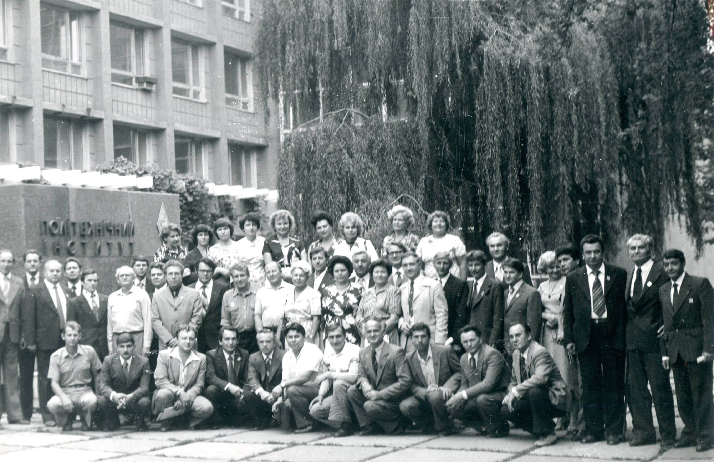Фото 1981 года. Встреча выпускников ОПИ 1961 г.
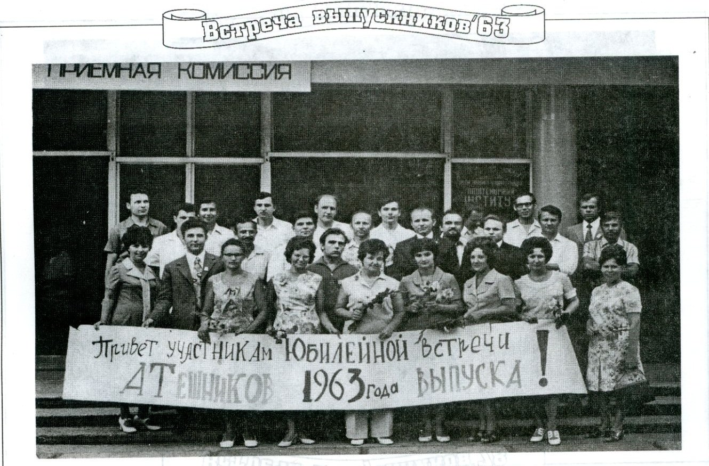Первые выпускники специальности "Автоматика и телемеханика". Среди выпускников будущий ректор ОПИ (ОНПУ) Малахов В.П. (1987-2010 гг.)
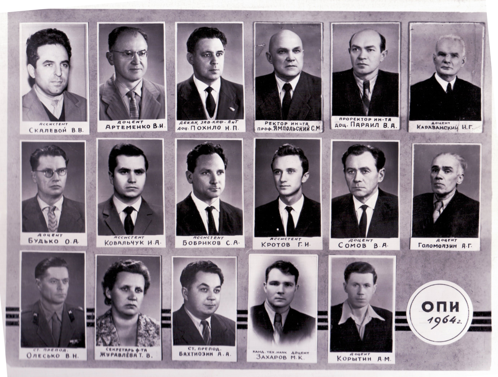Научно-преподавательский состав ФАПе (ИКС) во главе с первым деканом Похило М.П. Фото 1964 г. Из личного архива Ямпольского Ю.С.
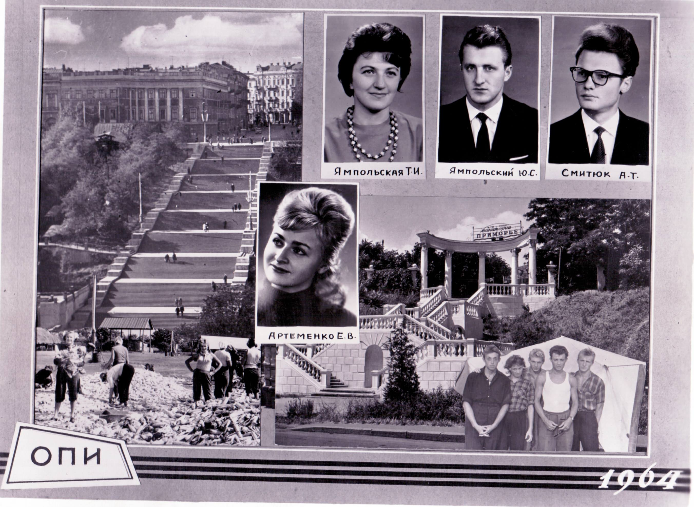Первые выпускники ФАВТ (ИКС), среди которых выпускник Ямпольский Ю.С. - декан РТФ (ИИБРТ) 1983-1988 гг. и проректор ОПИ (ОНПУ) 1987-2009 гг. (фото из личного архива Ямпольского Ю.С.). Фото 1964 г.
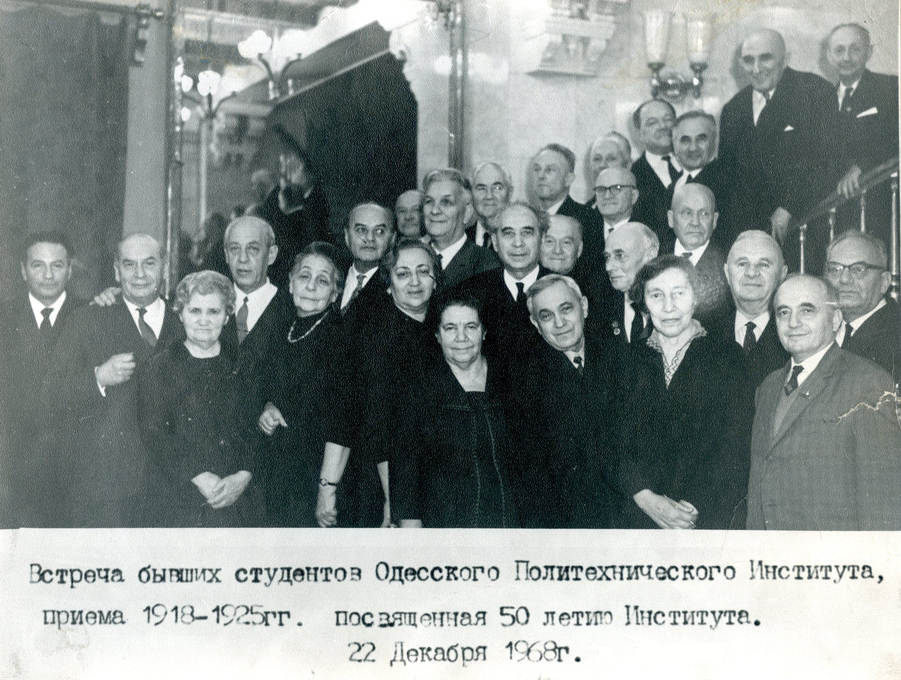Встреча выпускников, 1968 г.
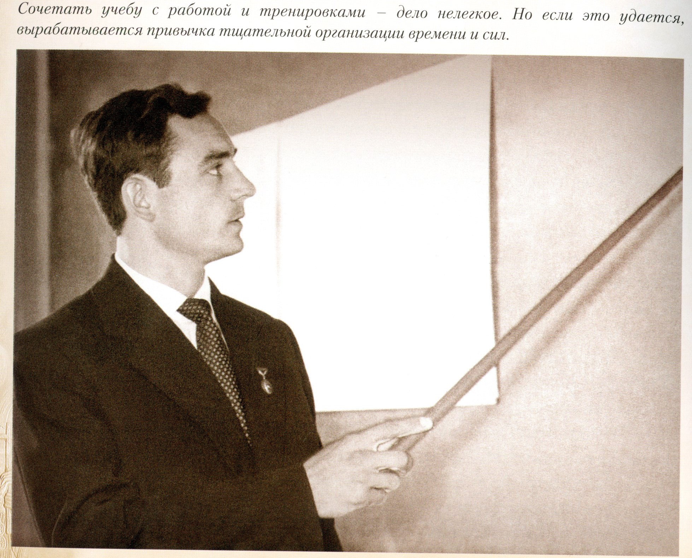Выпускник ОПИ 1963 года - Филипчук В.С. Чемпион СССР и Украины по легкой атлетике